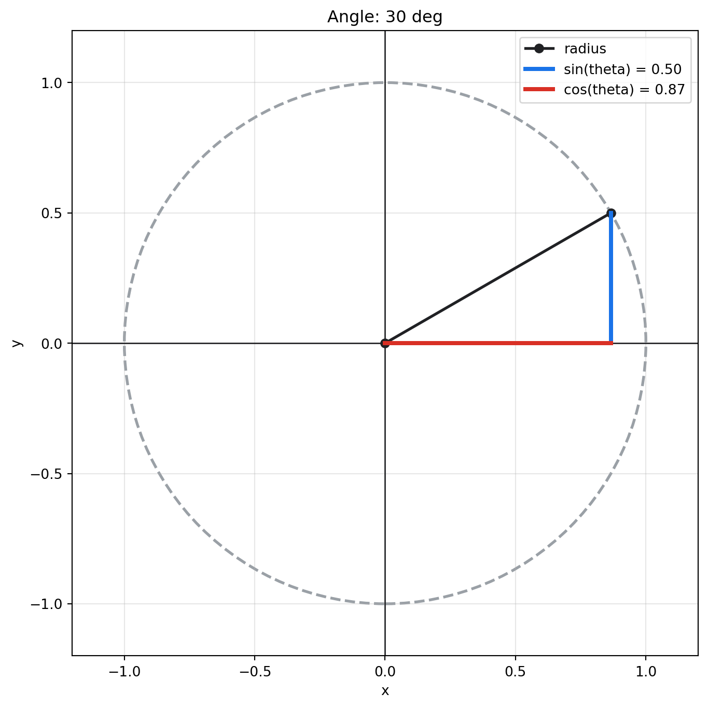

Understanding sine and cosine through the unit circle.
Sine and cosine describe the coordinates of a point moving around the unit circle.
The unit circle is a circle with radius 1 centered at the origin. If an angle starts on the positive x-axis and rotates counterclockwise, the point on the circle has coordinates:
(cos(theta), sin(theta))
That means:
cos(theta) is the horizontal coordinate.
sin(theta) is the vertical coordinate.
A first angle
At 30 degrees, the point is mostly to the right and slightly above the x-axis. The cosine value is the horizontal distance from the origin, and the sine value is the vertical height.
from edumath.trigonometry.plots import plot_unit_circlefig, ax = plot_unit_circle(30)fig

Reading the picture
In the plot:
the black segment is the radius of the unit circle;
the red segment shows the cosine component;
the blue segment shows the sine component.
Because every point is on a circle of radius 1, sine and cosine always stay between -1 and 1.
Special angles
Some common angles have exact sine and cosine values. These values are useful because they appear constantly in trigonometry, geometry, and calculus.
from edumath.trigonometry.plots import unit_circle_pointfor angle in [0, 30, 45, 60, 90, 180, 270, 360]: point = unit_circle_point(angle)print(f"{angle:>3} degrees: "f"cos(theta) = {point.cosine: .3f}, "f"sin(theta) = {point.sine: .3f}" )
At 60 degrees, sine and cosine are both positive. At 120 degrees, sine is still positive, but cosine is negative because the point is now to the left of the y-axis.
In a live notebook
The package also includes an interactive widget for live Jupyter notebooks.
from edumath.trigonometry.plots import display_unit_circle_widgetdisplay_unit_circle_widget(initial_angle=45, min_angle=-360, max_angle=360)
Interactive unit circle
Use the slider or type an angle between -360 and 360 degrees. Positive angles rotate counterclockwise; negative angles rotate clockwise.